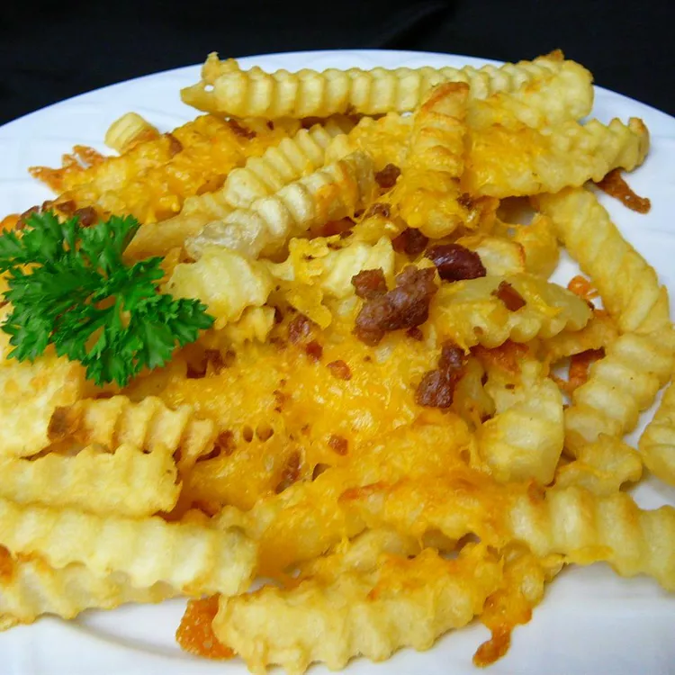

Loaded Fries

Description
A super simple one. Anyone can do this. It really does help to spice up your fries.
Ingredients
- Uncooked Fries
- Cheese
- OPTIONAL: bacon
Steps
- Cook the fries, adding whatever seasonings you want.
- Add the cheese to the top of the still-hot fries
- Add the bacon atop the melted cheese
- Serve.